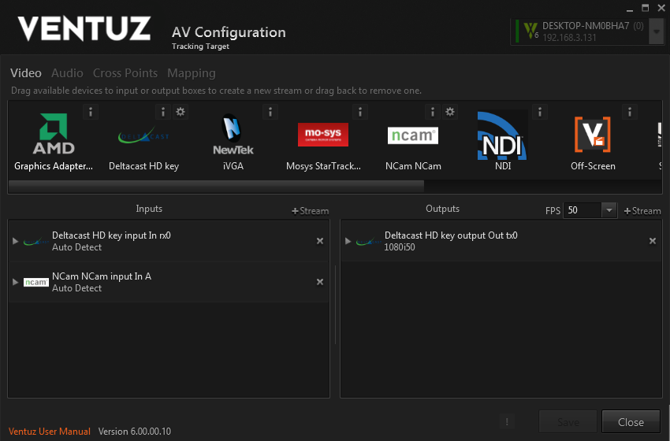
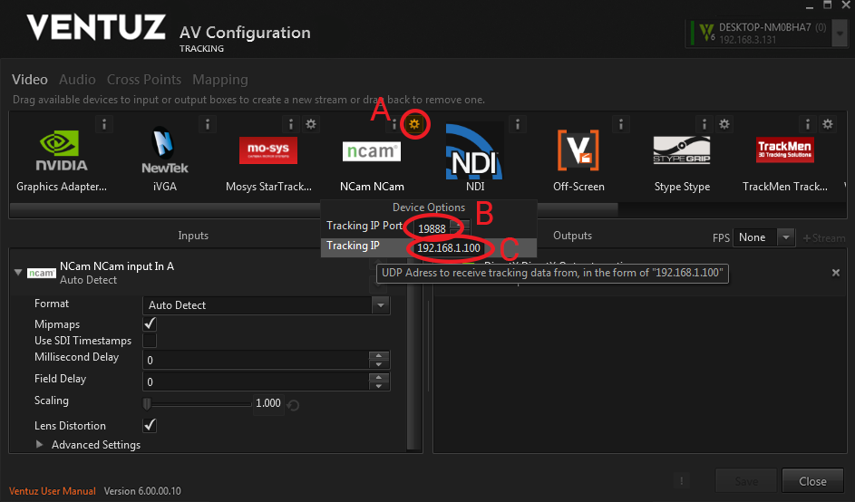
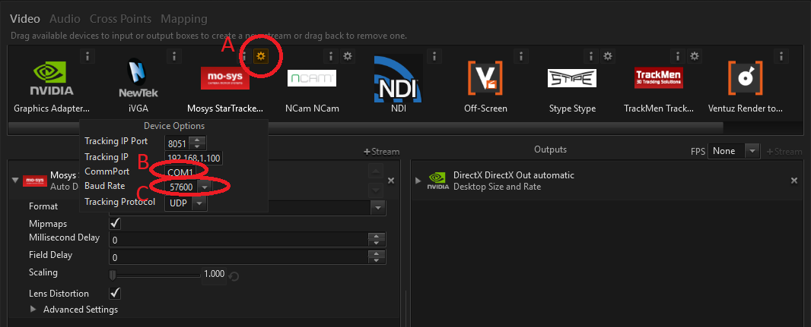
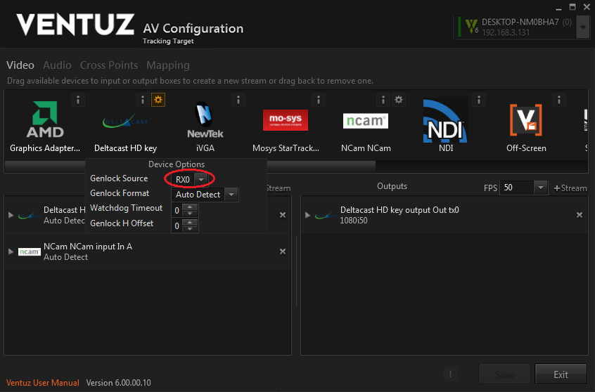
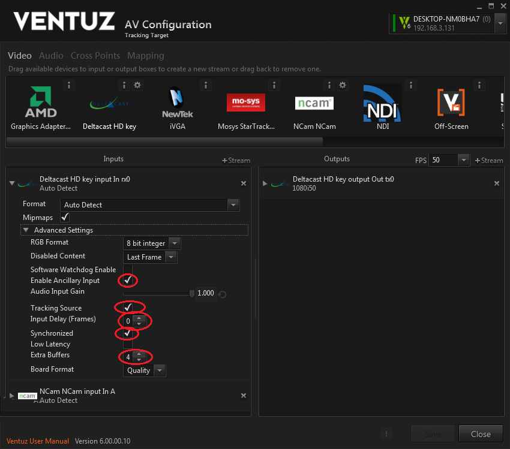
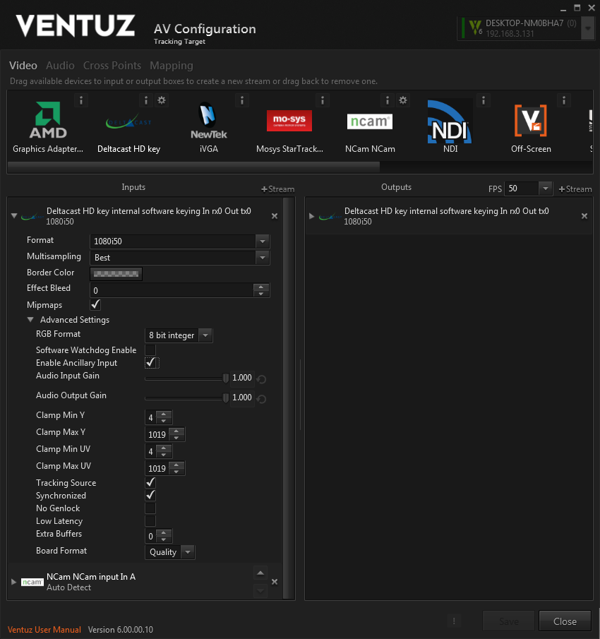
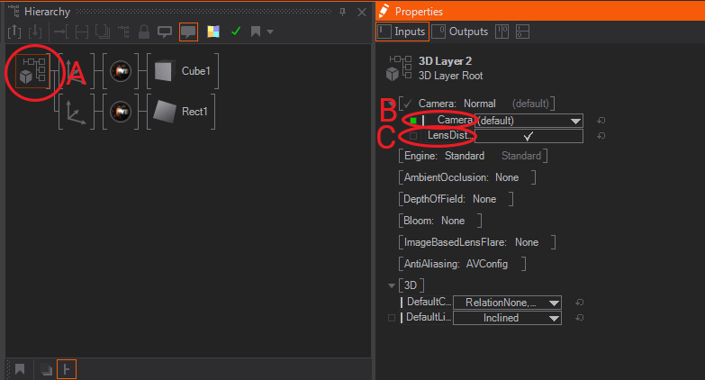

In order to use Camera Tracking data an additional Tracking license option must be purchased and added to your Ventuz Designer or Runtime licenses.
Among the multiple Video I/O boards supported by Ventuz, there are some limitations and we have prepared a list of supported Cards. Please have a look at the the Supported Hardware Vendors Page.
Currently Ventuz supports these Camera Tracking system vendors:
German vendor Trackmen develops various camera tracking systems using various technologies. Trackmen uses in all cases the same consistent protocol for tracking data transfer, so all Trackmen systems can be connected to Ventuz, regardless of the tracking technology used.Currently, Trackmen offers these tracking products, all supported by Ventuz:
British manufacturer NCam develops Optical Camera tracking solutions that use a lightweight sensor bar attached to the camera to track natural features in the environment, allowing the camera to move freely in all locations - that makes this system especially well suited for shoulder-held or steady-cam shots, or for augmented reality projects outside of the studio. More info here
Croatian manufacturer Stype offers a sensorizing kit with auto-aim functionality, called Stype Kit, for existing cranes and jibs. The system does not require any additional external sensors or infra-red cameras and there is no need for any physical modifications of the camera crane. More info here
British manufacturer Mo-Sys is a traditional vendor of solutions for remote heads & motion control, broadcast robotics, mechanical and optical camera tracking for AR and VR, and on-set visualization. One of the latest additions to their portfolio is an optical camera tracking system called StarTracker, which features a small sensor camera tracking a cloud of markers placed on the ceiling - that makes it mostly usable for permanent in-studio setups. More info here

If you have the Tracking option enabled in your license, all the supported tracking devices will be displayed in the AV Configuration menu. Please bear in mind that Ventuz does not check if Tracking systems are connected, this list only shows the supported Tracking systems.
In order to configure the video device and tracking source just drag and drop icons to input and output panels as needed. As you can see in Figure above, for tracking you will normally need one Tracking and one Video source which must be placed in the Inputs pane, and normally one Video Output device, which must be placed in the Outputs pane. Please check the AV Configuration section for more info.
Depending on the Camera Tracking system of your choice, tracking data will be transmitted via Ethernet (Trackmen/NCam/Stype) of using Serial connections (Mo-Sys). Therefore, when you add the tracking systems in your Configuration Editor, these are the options available, and how to set up tracking data transmission to Ventuz system.

In order to set up the tracking data communication we press the little gear icon close to the Tracking Vendor Logo (A in figure above).
After pressing the sprocket a Device Options contextual menu will appear and, depending on the communications interface used by every Tracking system, some parameters will be available.
For tracking systems using Ethernet infrastructure two parameters will be available, currently the supported tracking systems that use IP Communication for the tracking data are Trackmen, NCam and Stype:

In order to setup the tracking data communication we press the little gear icon close to the Tracking Vendor Logo.
After clicking on the gear icon a Device Options contextual menu will appear and, depending on the communications interface used by every Tracking system, some parameters will be available.
For tracking systems using Serial Communications infrastructure two parameters will be available, currently the only supported tracking system that uses Serial Communication for the tracking data is Mo-Sys StarTracker:
Apart from the above settings which are common to most Tracking systems, some of them feature specific parameters due to some unique capabilities.
Ventuz can be used in 2 basic modes (not only for tracking):
In most cases Video and tracking data delays won't be equal. These delays are also dependent on cable lengths and intervening equipment in the signal pathways, so each installation will feature different delays.

Genlock Source settings for Deltacast board

Deltacast Video input for Timecode operation with extra video input buffers:

Even when using external keying we need an input SDI signal synchronized to the house clock. The image of this signal does not matter, it is only used to get timing information to correctly align the tracking data with the house clock.
You will need to adjust the frame delay in the external keyer / video mixer.

Once you have set up the tracking data sources and the correct synchronization (see above), now you are ready to use the external Camera Tracking and Lens Distortion data to drive the virtual camera into your Ventuz scene.
In order to do so, just create a 3D Layer in Ventuz Layer Editor. As you can see in figure above, if you get into the 3D scene Properties, by clicking on the 3D Scene Root (A in figure), the contextual Properties will appear in the Properties Editor to the right.
If you expose the 3D Camera Properties, you will get two fields, first one being a Camera dropdown menu (B in figure above) that displays the camera being used - the (default) camera is the start option, and Ventuz always assumes that it will be controlled by any external tracking device data, so if you leave it like that the 3D camera will be tracked. If you don't want your camera to be tracked, just add another 3D Camera into your Hierarchy Editor.
The other control available, Lens Distortion (C in figure above), is just a checkbox that controls if Lens Distortion data is applied or not.